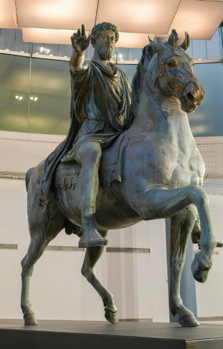

121 d.C. – 180 d.C.
Marco Aurélio
O imperador filósofo
Marco Aurélio governou o Império Romano de 161 a 180 d.C., sendo lembrado como o último dos chamados "cinco bons imperadores". Seu reinado foi marcado por guerras nas fronteiras do Danúbio, uma grave epidemia e crises econômicas — um contexto bem diferente da imagem de estabilidade que às vezes se associa a Roma nesse período.
Desde jovem recebeu educação refinada em retórica e filosofia, e foi apresentado ao Estoicismo por tutores que lhe transmitiram, entre outras coisas, os ensinamentos de Epicteto. Diferente dos demais estoicos aqui apresentados, Marco Aurélio não fundou escola nem lecionou: viveu a filosofia como exercício pessoal, no meio das responsabilidades mais pesadas que um homem de seu tempo poderia carregar.
Foi justamente nesse contexto que escreveu suas "Meditações" — um conjunto de anotações íntimas, provavelmente nunca destinadas à publicação, nas quais o imperador se aconselha a si mesmo sobre como manter a serenidade diante do poder, da guerra, da doença e da própria mortalidade. O texto tem tom de diário filosófico, não de tratado, e por isso soa surpreendentemente pessoal até hoje.
Nas "Meditações", Marco Aurélio retoma temas centrais do Estoicismo — a aceitação do que não depende de nós, a brevidade da vida, o dever para com a comunidade humana — e os aplica não a discípulos, mas a si mesmo, num esforço constante de autogoverno. Essa combinação rara entre poder absoluto e disciplina filosófica é o que faz de sua obra uma das mais lidas da tradição estoica até hoje.
Marco Aurélio lembrava a si mesmo que a felicidade de sua vida dependia da qualidade de seus próprios pensamentos, não das circunstâncias ao seu redor. — resumo do ensinamento atribuído a Marco Aurélio